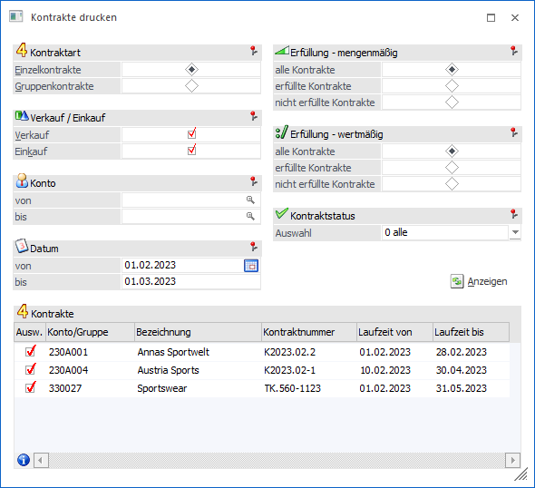
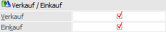
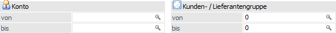
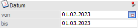
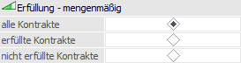
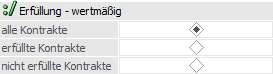
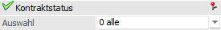
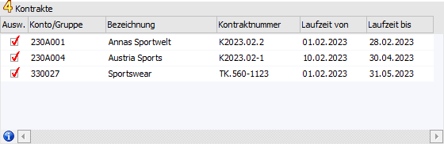
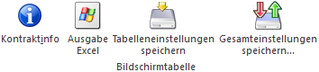
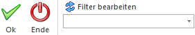

Sollen bereits gedruckte Kontrakte noch einmal ausgedruckt werden, so kann dieses am einfachsten mit Hilfe des Programms…
1 WinLine FAKT
1 Erfassen
1 Kontraktverwaltung
1 Kontrakte drucken
… vorgenommen werden.

Der Druck erfolgt für alle Kontrakte, welche in der Tabelle "Kontrakte" aktiviert wurden. Der Inhalt der Tabelle kann mit Hilfe der folgenden Selektionskriterien beeinflusst werden.
Kontraktart

Ø Einzelkontrakte / Gruppenkontrakte
An dieser Stelle kann definiert werden, ob "Einzelkontrakte" oder "Gruppenkontrakte" ausgegeben werden sollen.
Verkauf / Einkauf

Ø Verkauf
Durch Aktivierung dieser Option werden Kontrakte aus dem Bereich "Verkauf" in der Tabelle angezeigt.
Ø Einkauf
Durch Aktivierung dieser Option werden Kontrakte aus dem Bereich "Einkauf" in der Tabelle angezeigt.
Konto / Kunden- / Lieferantengruppe

Ø Konto von / bis bzw. Kunden- / Lieferantengruppe von / bis
Gemäß der Einstellung "Kontraktart" kann an dieser Stelle eine Eingrenzung auf die Konten bzw. Gruppen erfolgen, für welche der Druck erfolgen soll.
Datum

Ø Datum
Hier kann eine Selektion aufgrund der Laufzeit des Kontrakts erfolgen (wird mit dem Tagesdatum vorbelegt).
Erfüllung - mengenmäßig

Ø Erfüllung - mengenmäßig - alle Kontrakte / erfüllte Kontrakte / nicht erfüllte Kontrakte
Gemäß dieser Einstellung werden jene Kontrakte in der Tabelle angezeigt, bei denen die vereinbarte Menge erfüllt, nicht erfüllt oder die Erfüllung irrelevant ist.
Hinweis
Als "Erfüllungsmenge" wird jene Menge herangezogen, welche in den FAKT-Parametern (WinLine START - Parameter - Applikations-Parameter - FAKT-Parameter - Belege - Kontrakte - "Kontrakt ist erfüllt beim Erreichen der…") als Solche angegeben wurde. Möglich sind hierbei "bestellte Menge", "gelieferte Menge" und "fakturierte Menge".
Erfüllung - wertmäßig

Ø Erfüllung - wertmäßig - alle Kontrakte / erfüllte Kontrakte / nicht erfüllte Kontrakte
Gemäß dieser Einstellung werden jene Kontrakte in der Tabelle angezeigt, bei denen der vereinbarte Wert erfüllt, nicht erfüllt oder die Erfüllung irrelevant ist.
Hinweis
Der "Erfüllungswert" bildet sich aus den bereits erfassten Fakturen.
Kontraktstatus

Ø Auswahl
Neben der mengenmäßigen Erfüllung des Kontrakts können Kontraktzeilen auch manuell abgeschlossen werden. An dieser Stelle kann eine entsprechende Selektion vorgenommen werden.
ü 0 - alle
Es werden alle
Kontrakt, unabhängig vom Status der enthaltenen Zeilen, in der Tabelle.
ü 1 - nicht abgeschlossen
Es
werden alle Kontrakte in der Tabelle angezeigt, bei denen nicht abgeschlossen
Kontraktzeilen (manuelle bzw. automatisch) vorhanden sind.
ü 2 - manuell abgeschlossen
Mit
Hilfe dieser Auswahl werden all jene Kontrakte in der Tabelle ausgegeben, bei
denen manuell abgeschlossene Kontraktzeilen vorhanden sind.
Hinweis
Jede nicht abgeschlossene Kontraktzeile kann manuell abgeschlossen werden. Dieses kann in der Kontraktliste Tabelle oder im Register Detailinfo der Kontrakterfassung durchgeführt werden.
ü 3 - automatisch
abgeschlossen
Bei diese Auswahl werden all jene Kontrakte in der Tabelle
aufgeführt, bei denen automatisch abgeschlossenen Kontraktzeilen vorhanden sind.
Es handelt es sich hierbei um Zeilen, welche mengenmäßig erfüllt wurden. Um
welche Menge es sich hierbei handeln soll (bestellt, geliefert oder fakturiert)
kann in den FAKT-Parametern (Belege - Kontrakte - Option "Kontrakt ist erfüllt
beim Erreichen der …") definiert werden.
Achtung
Sollte die Übererfüllung von Kontrakten erlaubt sein, so werden Kontraktzeilen nie automatisch abgeschlossen!
Anzeigen

Ø Anzeigen
Durch Anwahl des Buttons "Anzeigen" wird die Tabelle "Kontrakte" gemäß der zuvor getätigten Selektion gefüllt.
Tabelle "Kontrakte"

Nach dem Drücken des Buttons "Anzeigen" werden in der Tabelle all jene Kontrakte angezeigt, welche der Selektion entsprechen. Mit Hilfe der Spalte "Ausw." kann definiert werden, welche Kontrakte bei Anwahl des Buttons "Ok" gedruckt werden sollen.
Tabellenbuttons

Ø Kontraktinfo
Mit Hilfe des Tabellenbuttons "Kontraktinfo" wird der in der Tabelle gewählte Kontrakt am Bildschirm angezeigt.
Ø Ausgabe Excel
Durch Anwahl des Buttons "Ausgabe Excel" wird der Inhalt der Tabelle an Microsoft Excel übergeben.
Ø Tabelleneinstellungen speichern
Die Spalten einer Tabelle können grundsätzlich an beliebige Positionen verschoben, bzw. in der Breite entsprechend angepasst werden. Durch Anwahl des Buttons "Tabelleneinstellungen speichern" werden die Einstellungen benutzerspezifisch gespeichert und bei dem nächsten Aufruf des Programmpunktes wieder vorgeschlagen.
Ø Gesamteinstellungen speichern
Im Gegensatz zu "Tabelleneinstellungen speichern" können mit "Gesamteinstellungen speichern" mehrere Tabellenaufbauten gespeichert und nach Wunsch geladen werden. Zusätzlich werden Sonderfunktionen der Tabelle (z.B. "Spalte gruppieren") ebenfalls bei der Speicherung bedacht.
Buttons

Ø OK
Durch Anwahl des Buttons "Ok" bzw. der Taste F5 werden die in der Tabelle gewählten Kontrakte ausgedruckt. Hierbei wird das Druckbild aus dem Beleg verwendet.
Ø Ende
Mit Hilfe des Buttons "Ende" bzw. der Taste ESC wird das Fenster geschlossen.
Ø Filter
Durch Anklicken des Buttons "Filter bearbeiten" kann die Tabelle "Kontrakte" nach frei definierbaren Kriterien eingeschränkt werden.